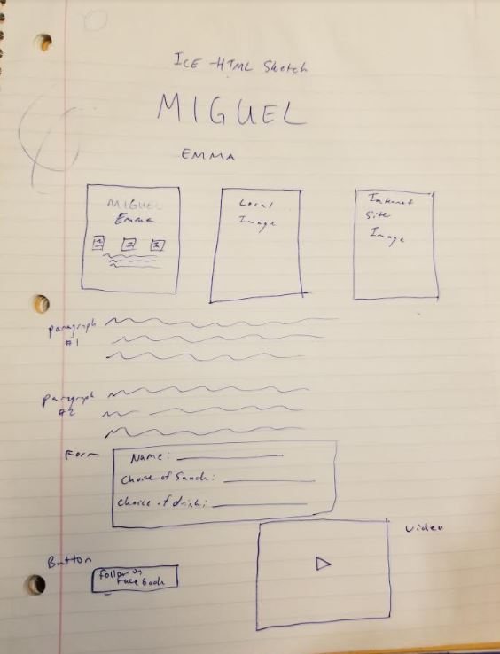

About Snoop Dogg and Coffee

"From the depths of the sea, blowing trees in the big leagues. I got a plan, I'm going ham on all you DBs. You better double me up, safety cover me up. Single coverage won't work boy, I'll burn him up. Give me the damn ball, move the chains at the same time. Dressed to impress when it's game time, flame mine. I'm wide open, hoping, scoping out the sea. Catch a quick screen, cake walk on your whole team. Will he beam, will he run, will he walk, talk, or will he lean? I need riders and goons when I build a team. I get it cracking with the snap of the wrist. It's nothing less than a championship, now peep this." - Snoop Dogg

Coffee is a brewed drink prepared from roasted coffee beans, which are the seeds of berries from the Coffea plant. The genus Coffea is native to tropical Africa (specifically having its origin in Ethiopia and Sudan) and Madagascar, the Comoros, Mauritius, and Réunion in the Indian Ocean.[2] The plant was exported from Africa to countries around the world. Coffee plants are now cultivated in over 70 countries, primarily in the equatorial regions of the Americas, Southeast Asia, India, and Africa. The two most commonly grown are the highly regarded arabica, and the less sophisticated but stronger and hardier robusta. Once ripe, coffee berries are picked, processed, and dried. Dried coffee seeds (referred to as beans) are roasted to varying degrees, depending on the desired flavor. Roasted beans are ground and brewed with near-boiling water to produce coffee as a beverage. Answers to questions 2, 3, and 6: 2: The three browsers that I tested my site in were Google Chrome, Microsoft Edge, and Mozilla Firefox. The main difference that I noticed was the differing appearance in the progress bar. In Firefox, the bar was green and animated while in both Chrome and Edge the bar was solid and blue. Another difference was the size of the text elements and how the video was formatted. 3: When you click on the text next to each element, nothing happens. It, in fact, does not put the field into focus. This matters because it makes the target size larger for the user to click, the user can now click the radio button itself or the text. 6: Code is hosted at https://migmartinez.github.io/ !